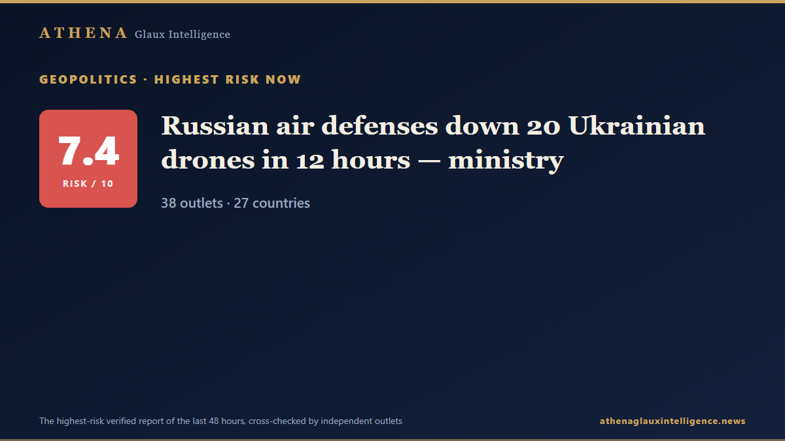
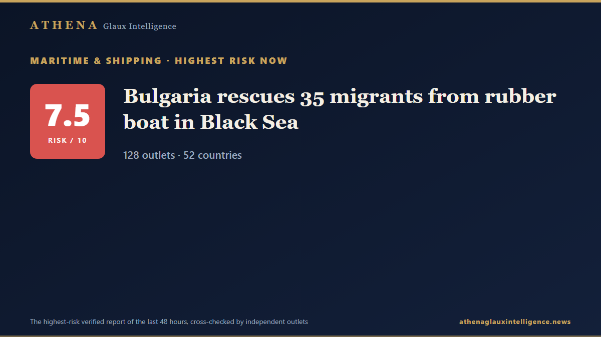
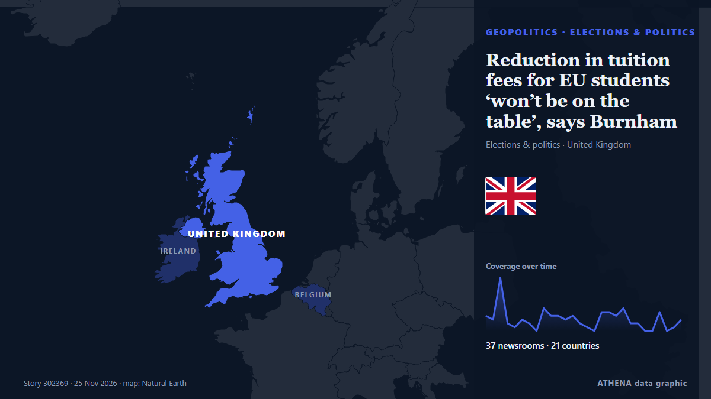

Κίνδυνος 7.4Αυξημένος
Γεωπολιτική, οικονομία και θαλάσσια ναυτιλία — διασταυρωμένα σε πολλές χώρες.
Γεωπολιτική
Όλη η Γεωπολιτική >Υψηλότερος κίνδυνος τώρα

Αυξανόμενος κίνδυνοςΑύξηση τις τελευταίες 24 ώρες
- Trump and NATO chief urge Russia to avoid actions that widen Ukraine warΚίνδυνος 0.0 → 6.2
- Melania Trump helps reunite 9 children with families amid Ukraine warΚίνδυνος 2.5 → 6.3
- UN Warns of Growing Risk of Atrocities by Israel Against PalestiniansΚίνδυνος 0.7 → 5.4
Ναυτιλία & ναυσιπλοϊα
Γραφείο Ναυτιλίας >Υψηλότερος κίνδυνος τώρα
Κίνδυνος 7.5Αυξημένος
Bulgaria rescues 35 migrants from rubber boat in Black Sea
Δείτε τα στοιχεία ›
Πίνακας παρακολούθησηςΠεράσματα, λιμάνια και άλλες ναυτιλιακές αναφορές
- Strait of HormuzΔιαταραχήattack / strike · risk 6.9 · 133 newsrooms (72 h)
- Bab el-Mandeb / Red SeaΔιαταραχήattack / strike · risk 7.5 · 131 newsrooms (72 h)
- Kerch Strait / Black SeaΔιαταραχήattack / strike · risk 7.5 · 131 newsrooms (72 h)
Κάθε είδηση, ελεγμένη σε πολλές χώρες.
Το ATHENA Glaux παρακολουθεί 744 ειδησεογραφικά μέσα σε όλο τον κόσμο. Μια είδηση γίνεται επαληθευμένο γεγονός μόνο όταν την αναφέρουν ανεξάρτητα μέσα. Κάθε γεγονός δείχνει ποιος το ανέφερε πρώτος και έναν βαθμό κινδύνου με τους λόγους του.
1.479γεγονότα σε 24 ώρες
744μέσα που παρακολουθούμε
44λεπτά ανάμεσα στις ενημερώσεις
Σεισμός ή πλημμύρα κοντά σας αυτή την εβδομάδα;
Γράψτε την πόλη σας και δείτε σεισμούς, πλημμύρες, καταιγίδες και επίσημες προειδοποιήσεις κοντά της, με λίστα κιτ έκτακτης ανάγκης 72 ωρών. Δωρεάν, χωρίς εγγραφή, και η περιοχή σας μένει στη συσκευή σας.
Αναφορές έρχονται από ανεξάρτητα μέσα — όταν δύο συναντηθούν στην ίδια ιστορία, γίνεται επιβεβαιωμένο γεγονός.
Πώς ελέγχει το ATHENA μια είδηση
- ΣυλλογήΟι αναφορές φτάνουν από ανεξάρτητα μέσα σε πολλές χώρες.
- ΑντιστοίχισηΌταν δύο μέσα συναντιούνται στην ίδια είδηση, γίνεται επαληθευμένο γεγονός.
- ΕξήγησηΚάθε γεγονός δείχνει ποιος ήταν πρώτος, πόσο εξαπλώθηκε και γιατί ο κίνδυνος είναι αυτός.
Παγκόσμια προοπτική κινδύνου
Εβδομαδιαίες και μηνιαίες επισκοπήσεις: τα γεγονότα υψηλότερου κινδύνου, οι τάσεις ανά τομέα και περιοχή και τι να παρακολουθήσετε.
Διαβάστε την προοπτική ›Ημερήσια ενημέρωση
Τα δέκα σημαντικότερα γεγονότα της ημέρας στον κόσμο, οι αυξανόμενοι κίνδυνοι και τα νέα γεγονότα, με κάθε αριθμό εξηγημένο.
Ανοίξτε τη σημερινή ενημέρωση ›
ΓεωπολιτικήReduction in tuition fees for EU students ‘won’t be on the table’, says Burnham
The Prime Minister secured agreements on food and agriculture exports, emissions trading and a youth experience scheme at last week’s Brussels summit. από Evening Standard (London)
6.4Σημασία
4.1Κίνδυνος · αυξημένος
87%Βεβαιότητα
Οι τίτλοι των ειδήσεων παρουσιάζονται στα αγγλικά, όπως δημοσιεύτηκαν.
Γεωπολιτική
Colombia rescues all hostages held at Cartagena supermarket
Colombian security forces rescued all remaining hostages unharmed after a failed robbery led to an overnight siege at a Cartagena supermarket. από UPI World News
Εμπόριο & Βιομηχανία
Oil tanker catches fire after hitting naval mine in Strait of Hormuz: Iranian Navy
An oil tanker caught fire and was left immobilized Wednesday after striking a naval mine in a restricted area east of the Strait of Hormuz, the Iranian Navy said, Anadolu reports. από Middle East Monitor
Χορηγούμενο
Cybernetics and Artificial Intelligence Lab Welcome to the Cybernetics and Artificial Intelligence Laboratory, established at the Department of Business Administration of the National and Kapodistrian University of Athens. The lab is headed by Professor Dimitrios Thomakos. The lab aims to do research that can be published in top venues. Our research uses tools and methods of Artificial Intelligence, and lies in the following areas: - Forecasting - Decision making - Cyber security - Finance We are always looking forward to collaborating with exceptional students!
Μάθετε περισσότερα – Cybernetics and Artificial Intelligence LabΠλοία στα θαλάσσια περάσματα τώρα
Ζωντανές μετρήσεις AIS. Πατήστε ή περάστε πάνω από μια μπάρα για λεπτομέρειες.
Τελευταίες αναφορές
Kim Jong-un orders tactical nuclear deployment and material expansion
Judge blocks FCC from early renewal of ABC licenses
Palestinian journalist killed by Israel in Gaza wins prestigious Rory Peck award
New York court upholds Mayor Mamdani’s rent freeze
Russian forces hit Kyiv with ballistic missiles, mayor says
One Nation defector Leah Blyth accuses Liberals of infighting and lack of conviction
Fuel tanker crash ignites a massive fire on a highway surrounding Cairo, killing at least 31 people
US stocks fall further as fears over AI intensify
Τεχνολογία & Κυβερνοασφάλεια
US stocks end mixed as Nvidia, Anthropic losses drag Nasdaq lower
Dow gains more than 400 points as chip stocks weigh on S&P 500. από Anadolu Agency (English)
Εμπόριο & Βιομηχανία
US proposes new tariffs on 14 trading partners, including China and the EU
The US proposed new tariffs on 14 trading partners on Wednesday. από The Next Web
Τεχνολογία & Κυβερνοασφάλεια
Alice Huang, woman at the heart of Nvidia scandal, kept in contact with China’s top spy agency for over a year
Alice Huang, who is said to have had an affair with the now-reinstated CEO of Nvidia, Jensen Huang, was in contact with China’s Ministry of State Security during that time for over a year, according… από The Independent Singapore
Γεωπολιτική, Πολιτική & Ασφάλεια
Περισσότερα ›Πόλεμοι & συγκρούσεις
Israeli strike kills Hamas official, his wife and children
By Nidal al-Mughrabi CAIRO, Nov 25 (Reuters) - Israel's military killed a senior Hamas security official as well as his wife and two children with an airstrike on their Gaza Strip apartment early on… από Al-Monitor
- Διπλωματία & σύνοδοι
(2nd LD) N. Korea's Kim inspects nuclear material sites, calls for broader use of tactical nukes
- Εκλογές & πολιτική
Israel govt formation: Eisenkot, Lieberman join hands in bid to oust Netanyahu
- Πόλεμοι & συγκρούσεις
Israel has turned Gaza into a 'toxic wasteland'
- Συμμαχίες & συνθήκες
Australia, Solomon Islands sign sweeping pact stymieing China
Οικονομία, Χρηματοοικονομικά & Αγορές
Περισσότερα ›Μετοχές, ομόλογα & αγορές
Tata battle moves to court: Tata Trusts to challenge N Chandrasekaran’s reappointment via casting vote
Tata Sons is looking to make changes to its articles of association in anticipation of an upcoming initial public offering. από Times of India
- Πληθωρισμός & επιτόκια
Japanese Yen strengths as inflation data reaffirms BoJ rate hike bets
- Πληθωρισμός & επιτόκια
Rupee records gain against US dollar
- Τράπεζες & πίστη
PM Discusses Options for Financing Transportation Infrastructure Projects with World Bank
- Μετοχές, ομόλογα & αγορές
SK Hynix to become Kioxia's top shareholder with bond conversion
Εμπόριο, Βιομηχανία & Υποδομές
Περισσότερα ›Αερομεταφορές, σιδηρόδρομος & οδικές
CJP’s Saurav Das moves Delhi HC after being stopped from travelling to UK
The Ministry of External Affairs said the passport office had asked Das to respond to a notice over alleged discrepancies and not use the document until then. από Scroll.in
- Κατασκευές & υποδομές
Malaysia benefits immensely as a trading nation by engaging with world leaders, says Anwar
- Δασμοί & έλεγχοι εξαγωγών
US Proposes 25% Tariff On India. It Could Come Down With Trade Deal
- Δασμοί & έλεγχοι εξαγωγών
US unveils proposed tariffs on major partners, including EU and China
- Δασμοί & έλεγχοι εξαγωγών
US proposes tariffs of up to 25% on Indian goods; New Delhi rejects excess-capacity finding
Ενέργεια, Πόροι & Περιβάλλον
Περισσότερα ›Ρύπανση & βιοποικιλότητα
Blast heard, smoke seen rising over farmland near Iowa Army lead azide detonation site
The Army went ahead with its planned detonation of volatile lead azide reserves Wednesday morning, according to the service. από Defense News
- Ακραία καιρικά & φυσικές καταστροφές
‘King tide’ waves batter California coast, soaking San Francisco
- Ακραία καιρικά & φυσικές καταστροφές
Macy's Thanksgiving Parade postponed to Saturday due to expected high winds
- Κλίμα & κλιματική πολιτική
China courts Global South with climate cooperation push at COP31
- Κλίμα & κλιματική πολιτική
Pope Leo XIV calls collapse of COP31 climate talks in Turkey ‘worrying’
Τεχνολογία, ΤΝ & Κυβερνοασφάλεια
Περισσότερα ›Επεξεργαστές & υπολογιστική
Nvidia chip scandal: How Alice Huang's $270m network is linked to China's military
Suspected China spy linked to Nvidia's ex-boss left in 2025, Megaspeed says. από Ada Derana
- Διάστημα & δορυφόροι
Pakistani astronaut becomes 1st international visitor to China's Tiangong space station (photos)
- Διάστημα & δορυφόροι
US Authorizes SpaceX to Deploy 1 Million Satellites for Data Centers in Space
- Διάστημα & δορυφόροι
Nasa's asteroid crash test left stadium-sized crater; first images reveal
- Τεχνητή νοημοσύνη
Alice Huang-linked firms listed US$270 million in AI servers in China, records show
Επιχειρήσεις, Εταιρείες & Επενδύσεις
Περισσότερα ›Συγχωνεύσεις & εξαγορές
Christchurch head curator hoping for ‘balanced contest’ in India vs New Zealand 2nd Test
Christchurch: Stumped by the absolute flat track in the opening Test in Wellington, both India and New Zealand will be hoping for a more sporting pitch in the winner-takes-all second and final game… από Deccan Herald
- Συγχωνεύσεις & εξαγορές
American Billionaire Signs U.S.-Backed Share Swap Deal to Buy Lukoil Global Assets
- Αποτελέσματα & προοπτικές
Four listed boxship owners have 90-98% of 2027 fixed as MPC's quarterly revenue falls 10%
- Επενδύσεις
Cost-of-living strike in Greece hits trains and planes
- Εταιρική στρατηγική
Google to shut down Nest app, Google Assistant on smart home devices in 2027
Δυστυχήματα & έκτακτες ανάγκες
Περισσότερα ›Δυστυχήματα & έκτακτες ανάγκες
Thirty-one killed in fire after vehicle overturns in Egypt
By Enas Alashray and Yomna Ehab CAIRO, Nov 25 (Reuters) - Thirty-one people were killed and 21 wounded in a fire after a vehicle carrying petroleum products overturned on a major ring road in Egypt… από Al-Monitor
- Δυστυχήματα & έκτακτες ανάγκες
At least 31 dead after fuel tanker fire in Egypt
- Δυστυχήματα & έκτακτες ανάγκες
Plane crash off the coast of Mississippi kills 6, including 2 children
- Δυστυχήματα & έκτακτες ανάγκες
Türkiye mourns 5 soldiers killed in military helicopter crash
- Δυστυχήματα & έκτακτες ανάγκες
Injured Bagnaia to miss season finale
Τρεις τρόποι να διαβάσετε σήμερα
Ξεκινήστε από αυτόν που ταιριάζει στον χρόνο σαςΕπαληθευμένα γεγονότα
Κατά σειρά έκτασης της κάλυψης
- Vance says Jensen Huang won't need a pardon as scrutiny of Nvidia scandal builds in Washington188 μέσα · 56 χώρεςΚίνδυνος 4.2
- Houthi Attack on Skyscraper in Saudi Capital Wounds 11, Officials Say61 μέσα · 28 χώρεςΚίνδυνος 4.1
- Huawei found guilty in trade secrets theft case50 μέσα · 27 χώρεςΚίνδυνος 3.0
- US officials divided over Chinese spying allegations following Jensen Huang's return49 μέσα · 21 χώρεςΚίνδυνος 2.4
- Houthi projectile hits Saudi Arabia’s Jazan port, coalition says40 μέσα · 21 χώρεςΚίνδυνος 7.2
Γραφείο Αξιολόγησης
Κάντε μια ερώτηση και διαβάστε τεκμηριωμένη αξιολόγηση μιας βασικής είδησης, μαζί με το τι θα την διέψευδε.
Ανοίξτε το Γραφείο Αξιολόγησης ›Η σημερινή εικόνα
| 09:00 | 303 |
|---|---|
| 10:00 | 480 |
| 11:00 | 1164 |
| 12:00 | 1147 |
| 13:00 | 846 |
| 14:00 | 870 |
| 15:00 | 806 |
| 16:00 | 683 |
| 17:00 | 583 |
| 18:00 | 558 |
| 19:00 | 593 |
| 20:00 | 373 |
| 21:00 | 248 |
| 22:00 | 186 |
| 23:00 | 503 |
| 00:00 | 278 |
| 01:00 | 383 |
| 02:00 | 334 |
| 03:00 | 241 |
| 04:00 | 411 |
| 05:00 | 456 |
| 06:00 | 312 |
| 07:00 | 516 |
| 08:00 | 427 |
Κίνδυνος των σημερινών γεγονότων
Γεωπολιτική82Οικονομία & Αγορές44Εμπόριο & Βιομηχανία41Επιχειρήσεις35Τεχνολογία & Κυβερνοασφάλεια31Ενέργεια & Περιβάλλον24Ναυτιλία9
Αναδυόμενα σήματα
- Κίνδυνος σε άνοδο · Ενεργό τώραTreasury's FinCEN takes systems offline after cybersecurity incident
- Απότομη αύξηση · Ενεργό τώραRas Tanura
- Απότομη αύξηση · Ενεργό τώραPoundland
- Απότομη αύξηση · Ενεργό τώραPCE
- Απότομη αύξηση · Ενεργό τώραKatz
Επίσημες προειδοποιήσεις
- M 6.5 - Vanuatu regionM6.5 · USGS ·
- M 5.9 - 238 km SW of Yanglong, ChinaM5.9 · PAGER yellow · USGS ·
Μείνετε ενημερωμένοι
ATHENA Weekly Risk Picture
Οι μεγαλύτεροι γεωπολιτικοί, οικονομικοί και ναυτιλιακοί κίνδυνοι της εβδομάδας, διασταυρωμένοι και βαθμολογημένοι.
Κάθε Παρασκευή στις 08:00 ώρα Ελλάδας · δωρεάν · στα αγγλικά
Δωρεάν εγγραφήΤο ATHENA στο Telegram
Οι ειδήσεις τη στιγμή που δημοσιεύονται: έκτακτα γεγονότα με κίνδυνο 6 ή περισσότερο, ωριαία σύνοψη, ενημερώσεις κινδύνου και η ημερήσια ενημέρωση στις 10:00.
Δωρεάν · αναρτήσεις στα αγγλικά · αποχωρείτε όποτε θέλετε
Είσοδος στο κανάλιΤην εγγραφή τη διαχειρίζεται η beehiiv με διπλή επιβεβαίωση: τίποτα από όσα πληκτρολογείτε δεν αποστέλλεται στο ATHENA, και κάθε τεύχος έχει σύνδεσμο διαγραφής.
Παρακολούθηση κινδύνων
Περισσότερα ›Στενά του ΟρμούζΚίνδυνος 4.78 νέα αυτή την εβδομάδα · μείωση από 22 την προηγούμενη εβδομάδαΕρυθρά ΘάλασσαΚίνδυνος 7.216 νέα αυτή την εβδομάδα · μείωση από 46 την προηγούμενη εβδομάδαΕλληνοτουρκικάΚίνδυνος 3.77 νέα αυτή την εβδομάδα · αύξηση από 5 την προηγούμενη εβδομάδαΚύπροςΚίνδυνος 3.813 νέα αυτή την εβδομάδα · μείωση από 16 την προηγούμενη εβδομάδαΚυρώσεις κατά της ΡωσίαςΚίνδυνος 6.817 νέα αυτή την εβδομάδα · περίπου όσα και την προηγούμενη εβδομάδαΠόλεμος στην ΟυκρανίαΚίνδυνος 7.5222 νέα αυτή την εβδομάδα · μείωση από 272 την προηγούμενη εβδομάδαΜέση Ανατολή: Ισραήλ – ΓάζαΚίνδυνος 6.878 νέα αυτή την εβδομάδα · μείωση από 93 την προηγούμενη εβδομάδαΤαϊβάνΚίνδυνος 2.711 νέα αυτή την εβδομάδα · περίπου όσα και την προηγούμενη εβδομάδαΠετρέλαιο και φυσικό αέριοΚίνδυνος 6.927 νέα αυτή την εβδομάδα · μείωση από 35 την προηγούμενη εβδομάδαΔιώρυγα του ΣουέζΚίνδυνος 0.00 νέα αυτή την εβδομάδα · μείωση από 3 την προηγούμενη εβδομάδαΣτενά του ΒοσπόρουΚίνδυνος 0.00 νέα αυτή την εβδομάδαΔιώρυγα του ΠαναμάΚίνδυνος 0.00 νέα αυτή την εβδομάδαΣκιώδης στόλοςΚίνδυνος 2.72 νέα αυτή την εβδομάδα · μείωση από 4 την προηγούμενη εβδομάδαΝαυσιπλοΐα στη Μαύρη ΘάλασσαΚίνδυνος 7.51 νέα αυτή την εβδομάδα · μείωση από 5 την προηγούμενη εβδομάδαΚεντρικές τράπεζες και επιτόκιαΚίνδυνος 4.143 νέα αυτή την εβδομάδα · περίπου όσα και την προηγούμενη εβδομάδαΕλληνική οικονομίαΚίνδυνος 0.87 νέα αυτή την εβδομάδα · περίπου όσα και την προηγούμενη εβδομάδαΕνέργεια στην Ανατολική ΜεσόγειοΚίνδυνος 0.02 νέα αυτή την εβδομάδα · μείωση από 4 την προηγούμενη εβδομάδαΒαλκάνιαΚίνδυνος 4.911 νέα αυτή την εβδομάδα · μείωση από 29 την προηγούμενη εβδομάδαΜεταναστευτικό στη ΜεσόγειοΚίνδυνος 1.21 νέα αυτή την εβδομάδα · μείωση από 3 την προηγούμενη εβδομάδα
Παγκόσμιοι κίνδυνοι — εβδομάδα 48, 2026 (23–29 Νοε) ›
Ανά τον κόσμο
Βόρεια ΑμερικήVance says Jensen Huang won't need a pardon as scrutiny of Nvidia scandal builds in Washington
58 γεγονότα
Μέση Ανατολή & Βόρεια ΑφρικήHouthi Attack on Skyscraper in Saudi Capital Wounds 11, Officials Say
58 γεγονότα
Νότια Ασία‘What pressure?’: Salahuddin on Hasina’s reported plan to return on December 16
55 γεγονότα
Νοτιοανατολική ΑσίαTrump says trade deal reached between the U.S. and the Philippines
54 γεγονότα
Υποσαχάρια ΑφρικήHuawei found guilty in trade secrets theft case
43 γεγονότα
Ρωσία & ΕυρασίαRussian air defenses down 20 Ukrainian drones in 12 hours — ministry
43 γεγονότα
Ανατολική Ασία(2nd LD) N. Korea's Kim inspects nuclear material sites, calls for broader use of tactical nukes
42 γεγονότα
ΩκεανίαAustralia reaffirms Pacific climate commitment despite COP31 outcome
32 γεγονότα
Λατινική Αμερική & ΚαραϊβικήColombia rescues all hostages held at Cartagena supermarket
26 γεγονότα